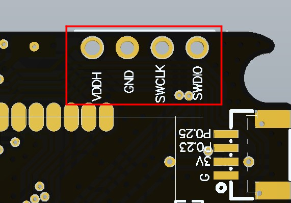
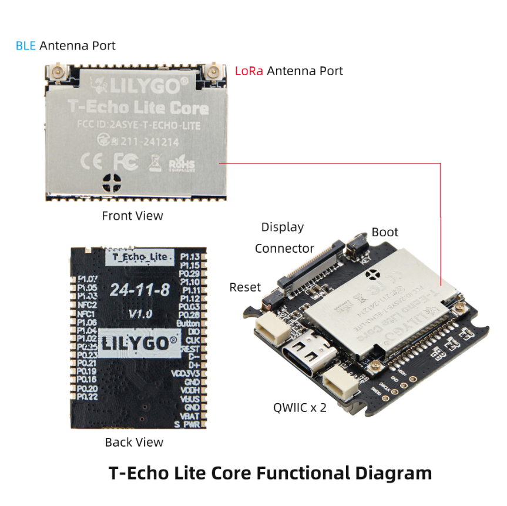

中文 简体
中文 简体LILYGO T-Echo Lite

版本迭代:
| Version | Update date | Update description |
|---|---|---|
| T-Echo-Lite_V1.0 | 2024-12-06 | 超低功耗LoRa节点设备初始版本 |
| T-Echo-Lite-KeyShield_V1.0 | 2025-10-14 | 键盘扩展板版本 |
购买链接
| Product | SOC | FLASH | RAM | Features | Link |
|---|---|---|---|---|---|
| T-Echo-Lite | nRF52840 | 1M | 256kB | LoRa + E-Paper | LILYGO Mall |
| T-Echo-Lite-KeyShield | - | - | - | 键盘扩展板 | 待发布 |
目录
描述
T-Echo Lite 是基于 T-Echo 的轻便版本，拥有更小的体积和更低的功耗设计。最低深度睡眠功耗可达 2μA-10μA，板载丰富的功能包括惯性传感器、LoRa 模块、太阳能充电功能（5V）、外置 GPS 等，优秀的功耗表现使得 T-Echo Lite 能够拥有出色的续航。
T-Echo-Lite-KeyShield 为 T-Echo-Lite 的底板扩展，主要扩展了键盘、扬声器、麦克风、振动等外设，提供更完整的人机交互功能。
预览
实物图

模块
T-Echo-Lite 部分
1. MCU
- 芯片：nRF52840
- RAM：256kB
- FLASH：1M
- 相关资料：
nRF52840_Datasheet
2. 屏幕
- 名称：GDEM0122T61
- 尺寸：1.22 英寸
- 分辨率：176x192px
- 屏幕类型：E-PAPER
- 驱动芯片：SSD1681
- 总线通信协议：IIC
- 其他说明：不支持快刷（咨询屏厂后他们回复不支持），建议只使用全刷
- 依赖库：
Adafruit_EPD
Adafruit_BusIO
Adafruit_SPIFlash
Adafruit-GFX-Library - 相关资料：
GDEM0122T61
SSD1681
3. LORA
- 芯片模组：S62F
- 芯片：SX1262
- 总线通信协议：SPI
- 依赖库：
RadioLib
Adafruit_BusIO
Adafruit_SPIFlash - 相关资料：
S62F
4. GPS
- 芯片模组：L76K
- 总线通信协议：UART
- 依赖库：
TinyGPSPlus
- 相关资料：
L76KB-A58
5. 惯性传感器
- 芯片：ICM20948
- 总线通信协议：IIC
- 依赖库：
ICM20948_WE
- 相关资料：
ICM20948
6. Flash
- 芯片：ZD25WQ32CEIGR
- 总线通信协议：SPI
- 依赖库：
Adafruit_BusIO
Adafruit_SPIFlash - 相关资料：
ZD25WQ32CEIGR
T-Echo-Lite-KeyShield 部分
1. 键盘背光
- 驱动芯片：AW21009QNR
- 总线通信协议：IIC
- 依赖库：
cpp_bus_driver
- 相关资料：
AW21009QNR
2. 振动
- 驱动芯片：AW86224
- 总线通信协议：IIC
- 依赖库：
cpp_bus_driver
- 相关资料：
AW86224AFCR
3. 扬声器麦克风
- 驱动芯片：ES8311
- 总线通信协议：IIC、IIS
- 依赖库：
cpp_bus_driver
- 相关资料：
ES8311
4. 键盘
- 驱动芯片：TCA8418
- 总线通信协议：IIC
- 依赖库：
cpp_bus_driver
- 相关资料：
tca8418
软件部署

Examples Support
T-Echo-Lite Examples
| Example | [Arduino IDE (Adafruit_nRF52_V1.6.1)] [PlatformIO (nordicnrf52_V10.6.0)] Support |
Description | Picture |
|---|---|---|---|
| Battery_Measurement | |||
| BLE_Uart | |||
| Button_Triggered | |||
| Display | |||
| Display_BLE_Uart | |||
| Display_SX1262 | |||
| Flash | |||
| Flash_Erase | |||
| Flash_Speed_Test | |||
| GPS | |||
| GPS_Full | |||
| ICM20948 | |||
| IIC_Scan_2 | |||
| nrf52840_module | |||
| Original_Test | Product factory original testing | ||
| Sleep_Wake_Up | |||
| SX126x_PingPong | |||
| SX126x_PingPong_2 | |||
| sx126x_tx_continuous_wave |
T-Echo-Lite-KeyShield Examples
| Example | [Arduino IDE (Adafruit_nRF52_V1.6.1)] [PlatformIO (nordicnrf52_V10.6.0)] Support |
Description | Picture |
|---|---|---|---|
| aw21009qnr | |||
| aw86224 | |||
| es8311 | |||
| original_test | Product factory original testing | ||
| tca8418 | |||
| voice_speaker |
| Bootloader | Description | Picture |
|---|---|---|
| bootloader |
| Firmware | Description | Picture |
|---|---|---|
| T-Echo-Lite_Original_Test(lora_868mhz_125khz) | Product factory original testing | |
| T-Echo-Lite_Original_Test(lora_915mhz_125khz) | Product factory original testing | |
| T-Echo-Lite-KeyShield_original_test | Product factory original testing |
PlatformIO
- 安装VisualStudioCode 和 Python
- 在
VisualStudioCode扩展中搜索PlatformIO插件并安装. - 安装完成后需要将
VisualStudioCode重新启动 - 重新开启
VisualStudioCode后,选择VisualStudioCode左上角的文件->打开文件夹->选择T-Deck目录 - 点击
platformio.ini文件,在platformio栏目中取消需要使用的示例行,请确保仅仅一行有效 - 点击左下角的（✔）符号编译
- 将板子与电脑USB进行连接
- 点击（→）上传固件
- 点击 (插头符号) 监视串行输出
Arduino IDE 开发
安装 Arduino，根据你的系统类型选择安装。
打开项目文件夹的“example”目录，选择示例项目文件夹，打开以“.ino”结尾的文件即可打开Arduino IDE项目工作区。
打开右上角
工具菜单栏->选择开发板->开发板管理器，找到或者搜索Adafruit_nRF52，下载作者名为Adafruit的开发板文件。接着返回开发板菜单栏，选择Adafruit_nRF52开发板下的开发板类型，选择的开发板类型由platformio.ini文件中以[env]目录下的board = xxx标头为准，如果没有对应的开发板，则需要自己手动添加项目文件夹下board目录下的开发板。(如果找不到Adafruit_nRF52，则需要打开首选项 -> 添加https://www.adafruit.com/package_adafruit_index.json到其他开发板管理地址)打开菜单栏
文件->首选项，找到项目文件夹位置这一栏，将项目目录下的libraries文件夹里的所有库文件连带文件夹复制粘贴到这个目录下的<C:\Users\UserName\Documents\Arduino\libraries>里边。在 "工具 "菜单中选择正确的设置，如下表所示。
| Setting | Value |
|---|---|
| Board | Nordic nRF52840 DK |
选择正确的端口。
开启引导下载模式：按一下RST芯片复位按键后松开等待LED1亮后（一定要等待LED1亮）再按一下RST按键后松开，观察到LED1灯逐渐熄灭逐渐点亮，即已进入引导下载模式。
点击右上角“[√]”进行编译，如果编译无误，将单片机连接电脑，点击右上角“[→]”即可进行烧录。
JLINK烧录firmware和bootloader
安装软件 JLINK
正确连接JLINK引脚如下图所示：

打开软件nRF-Connect-for-Desktop 安装工具 Programmer 并打开
添加文件，同时选择bootloader文件和firmware文件，点击 Erase&write ，即可完成烧录
{kind=link}
{kind=link}
开发平台
- Arduino IDE - Adafruit nRF52 支持
- Platform IO - nordicnrf52 平台
- nRF Connect SDK - 原生开发
引脚总览
引脚定义请参考配置文件：
相关测试
功耗测试
Power Dissipation
| Firmware | Program | Description |
|---|---|---|
| Sleep_Wake_Up Sleep_Wake_Up(uf2) |
Sleep_Wake_Up |
Minimum power consumption: 2.54uA More information can be found in the Power Consumption Test Log |
常见问题
- Q. 看了以上教程我还是不会搭建编程环境怎么办？
- A. 如果看了以上教程还不懂如何搭建环境的可以参考LilyGo-Document文档说明来搭建。
- Q. 为什么打开Arduino IDE时他会提醒我是否要升级库文件？我应该升级还是不升级？
- A. 选择不升级库文件，不同版本的库文件可能不会相互兼容所以不建议升级库文件。
- Q. 为什么我的板子USB输出不任何调试信息
- A. 请打开串口助手软件中的“DTR”选项
- Q. 为什么我直接使用USB烧录板子一直烧录失败呢？
- A. 请按一下RST芯片复位按键后松开等待LED1亮后（一定要等待LED1亮）再按一下RST按键后松开，观察到LED1灯逐渐熄灭逐渐点亮，即已进入引导下载模式，这时候就能烧录了。
- Q. T-Echo-Lite模块的蓝牙天线和Lora天线应该如何区分呢？
- A. T-Echo-Lite模块的蓝牙天线和Lora天线如下图所示：
